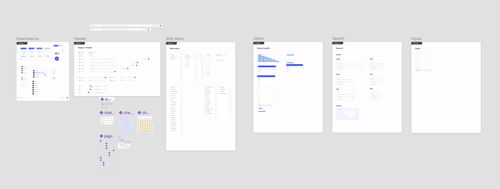
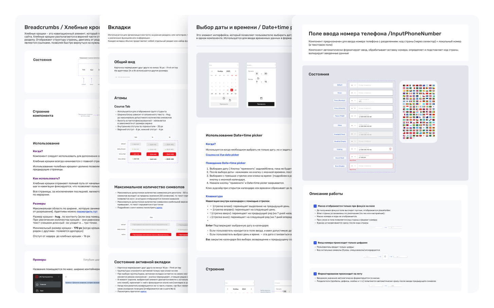
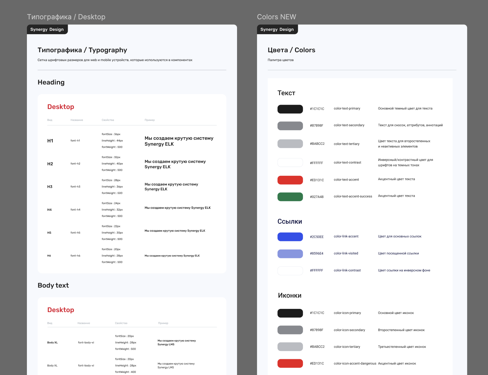
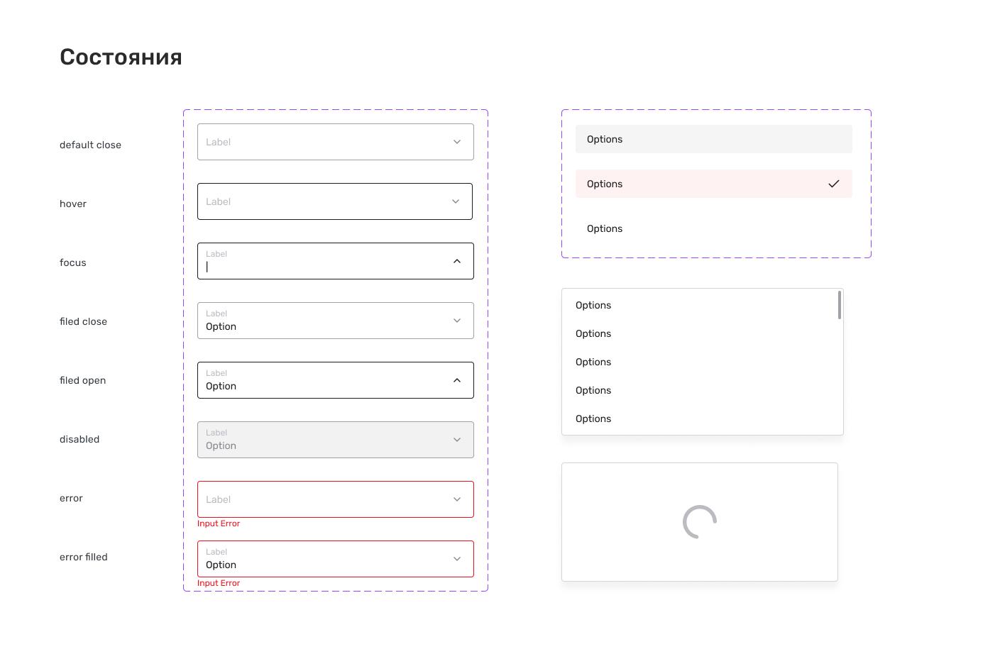
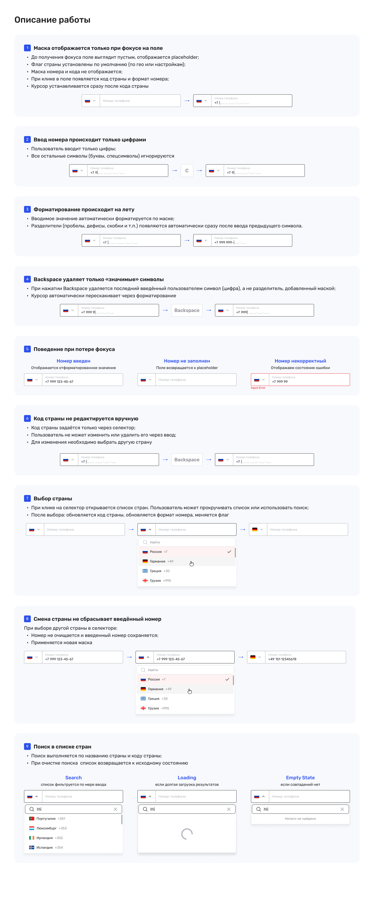
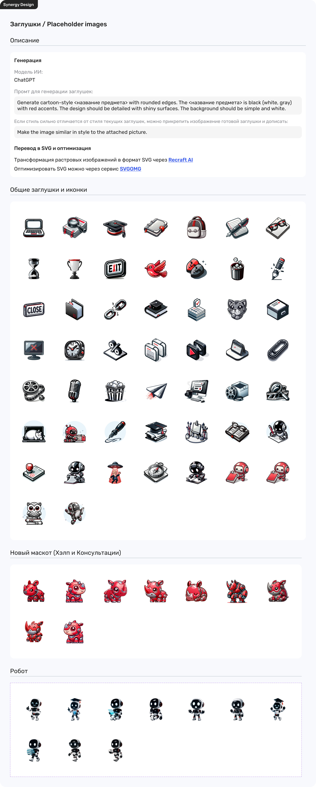

О проекте
Дизайн-система используется в двух продуктах: LMS-платформе и ELK (личном кабинете студента). Поддерживает разработку десктопных интерфейсов и служит общей основой для проектирования, развития и масштабирования обоих продуктов.
В состав системы входят цветовая палитра, UI-компоненты с вариантами и состояниями, документация и спецификации для разработки. Библиотека доступна в Figma, а реализованные компоненты представлены в Storybook.
Проблема
Долгий процесс разработки. Каждый новый компонент приходилось отдельно обсуждать с разработчиками, согласовывать его внешний вид, поведение и состояния. Это увеличивало время на проектирование, согласования и реализацию.
Повторная проработка решений. При отсутствии общей библиотеки похожие элементы создавались заново, что приводило к дублированию работы и увеличивало затраты на разработку.
Недостаток документации. Разработчикам приходилось дополнительно уточнять детали реализации, поскольку не все состояния, варианты и правила использования компонентов были описаны.
Неоднородность интерфейсов. Отсутствие общих визуальных правил затрудняло поддержание единого стиля между разными разделами и продуктами.
Моя роль
На этапе формирования и развития дизайн-системы мы работали вдвоём с другим продуктовым дизайнером. Совместно определяли подходы, принимали решения и согласовывали изменения.
Позже к работе подключились ещё два дизайнера. Они занимались поддержкой библиотеки, документированием готовых компонентов и их доработкой по комментариям. Мы с коллегой проводили превью результатов, давали обратную связь и согласовывали изменения.
Формирование и развитие архитектуры.
Создание компонентов.
Документация и стандартизация.
Визуальная система.
Взаимодействие с разработкой.
Поддержка и развитие.
Этапы развития дизайн-системы
1. Начальный UI-kit
На момент моего прихода существовала небольшая библиотека с несколькими базовыми компонентами: кнопками, полями ввода, селектами и текстовыми полями. В оформлении использовалась синяя цветовая схема, сформированная предыдущим дизайнером. Библиотека ещё не имела единой архитектуры и подробной документации.

«До»: компоненты, когда я пришла
2. Формирование полноценной дизайн-системы
Вместе с другим дизайнером мы начали масштабировать UI-kit и формировать полноценную дизайн-систему. На этом этапе пересмотрели визуальное оформление LMS: вместо первоначальной синей цветовой схемы перешли к более корпоративному стилю в соответствии с брендбуком Synergy. Параллельно развивали архитектуру библиотеки, создавали новые компоненты, систематизировали цветовую палитру и формировали документацию и единые правила использования элементов.

«После»: дизайн-система после формирования
Задача
Создать масштабируемую дизайн-систему, которая позволит:
Обеспечить единый визуальный язык для двух продуктов.
Сократить дублирование компонентов и решений.
Упростить проектирование новых интерфейсов.
Синхронизировать подходы дизайнеров и разработчиков.
Обеспечить возможность дальнейшего развития продуктов без постоянного создания элементов с нуля.
Архитектура и структура
Работа началась с формирования общей структуры библиотеки и принципов организации компонентов. Постепенно дизайн-система разделилась на несколько уровней.
Foundations
Базовые визуальные основы системы:

Variants & States
Для компонентов прорабатывались варианты использования, размеры и состояния: default, hover, focus, active, disabled, error и другие. Это позволило описать поведение элементов в разных сценариях и обеспечить согласованность интерфейсов.

Документация компонентов
Важной частью развития системы стала документация. Для компонентов описывались:
Назначение и правила использования.
Анатомия и составные элементы.
Доступные варианты и состояния.
Особенности адаптивности.
Спецификации и рекомендации для разработки.
Документация помогла сформировать единые правила работы с библиотекой и снизить вероятность разночтений при реализации интерфейсов.

Синхронизация с разработкой
Дизайн-система развивалась не только в Figma. Компоненты были перенесены в код и представлены в Storybook, где разработчики могут просматривать их варианты и состояния.
Таким образом, Figma-библиотека и Storybook стали общей точкой опоры для дизайнеров и разработчиков, помогая поддерживать соответствие между макетами и реализацией.
AI-генерация визуальных материалов
В дизайн-систему мы внедрили процесс генерации иллюстраций, иконок и изображений для заглушек с помощью AI. Это позволило быстрее создавать новые визуальные материалы и поддерживать единый стиль в интерфейсах.
Для генерации подготовили инструкцию с базовым промптом и рекомендациями: использовать мультяшную 3D-стилистику, скруглённые формы, глянцевые поверхности, чёрно-белую основу с красными акцентами и простой светлый фон. При необходимости стиль можно дополнительно адаптировать по референсу.
После генерации изображения переводятся в SVG с помощью Recraft AI и оптимизируются через SVGOMG для дальнейшего использования в интерфейсах.
Результат: сформировали библиотеку AI-иллюстраций, иконок и маскотов, которые соответствуют визуальному стилю продуктов и могут использоваться в разных сценариях LMS и личного кабинета студента.

Развитие и масштабирование
По мере развития продуктов библиотека регулярно пополнялась новыми компонентами и дорабатывалась с учётом возникающих задач.
Архитектура и общие принципы организации системы формировались и последовательно уточнялись в процессе работы. При этом решения по компонентам учитывали потребности сразу двух продуктов, а также возможность повторного использования элементов в других командах.
Другие подразделения компании также могут использовать библиотеку по запросу.
Результат
За четыре года небольшой UI-kit превратился в общую дизайн-систему, которая используется в двух продуктах и поддерживается командой дизайнеров.
Основные результаты:
200+ компонентов и элементов в общей библиотеке.
2 продукта, использующих единую систему компонентов и визуальных принципов.
Figma + Storybook как инструменты для совместной работы дизайнеров и разработчиков.
Единые правила и документация, упрощающие использование и поддержку компонентов.
Сокращение времени работы: по оценке команды, использование готовых компонентов позволило примерно в два раза ускорить проектирование вайрфреймов и разработку интерфейсов.
В результате дизайн-система стала не просто набором UI-компонентов, а общей основой для проектирования, разработки и дальнейшего масштабирования продуктов.
Что это дало бизнесу
Быстрая адаптация новых команд. Стандартизированные интерфейсы и документация сокращают время на погружение в проект и помогают быстрее включаться в работу.
Единый визуальный язык. Общие компоненты и правила обеспечивают целостный пользовательский опыт и узнаваемость бренда во всех продуктах.
Рост операционной эффективности. Готовые решения сокращают время на согласования и повторную проработку интерфейсов, ускоряя запуск новых функций.
Снижение затрат на разработку. Повторное использование компонентов уменьшает объём работ по дизайну и фронтенд-разработке, сокращая время на макеты, вёрстку и исправления.
Ускорение создания графики с помощью AI. Внедрили AI для генерации иллюстраций и иконок, сократив время на подготовку визуальных материалов без потери единого стиля.
Сохранение целостности бренда. Основывались на брендбуке и адаптировали проверенные решения из UI-библиотек под задачи и визуальный язык продуктов.